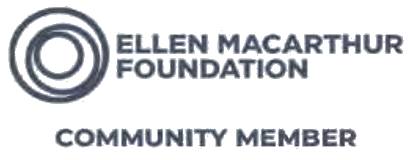
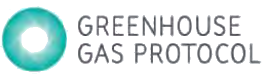
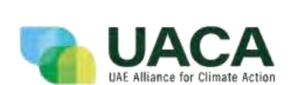
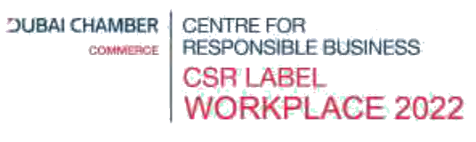

Brand Protection
Protect your brand at every point through secure handling, debranding and controlled destruction.
More than waste management
We help organisations protect their brands, recover resources and turn responsible action into measurable environmental and social good.
 Recovered resources
Environmental good
Social good
Recovered resources
Environmental good
Social good
What Full Circle means
At YFC, Full Circle means looking beyond disposal. We protect products and brands, recover useful resources, document what happens next and use the strength created through our work to support a wider circle of environmental and social good.
Doing Good is how we help organisations protect products, recover resources and close material loops. To Do Good is how the value created through our work helps support environmental, educational and community initiatives. Together, they form one Full Circle of impact.
Select a half of the circle to see what it covers.
One Earth. One Family.
We share one planet and one future. That is why our work does not stop when a material is collected or a certificate is issued. By helping organisations act responsibly, we protect resources and strengthen our ability to support education, communities, environmental awareness and other meaningful initiatives.
The Full Circle journey
Choose a responsible way to manage products and materials.
We assess, plan, collect and manage the operational journey.
Materials follow the best available recovery, recycling, upcycling or alternative pathway.
Certificates, mass balance and reporting make the outcome visible.
Your responsible action can be communicated and celebrated.
The value created helps strengthen wider environmental and social initiatives.
Solutions
From assessment and collection to secure recovery, engagement and reporting, YFC brings the journey together.
Protect your brand at every point through secure handling, debranding and controlled destruction.
Manage obsolete, damaged, expired or unsellable products securely and responsibly.
Recover material value and identify the best available route back into circulation.
Transform suitable materials into useful products, experiences and new opportunities.
Discover YFC Re-NuEngage employees, students, clients and communities through meaningful activities.
Document outcomes through certificates, mass balance information and reporting.
Detailed services: secure product destruction and recycling, brand protection, shredding and data destruction, hazardous and specialised waste management, scrap and metal waste trading, upcycling, zero-waste solutions, and CSR and engagement initiatives.
Explore Our SolutionsMaterials and products
YFC works with a wide range of products and material streams. The appropriate pathway depends on composition, condition, risk, recovery potential and applicable requirements.
Possible next steps
The final pathway is confirmed after assessment. We don't promise a single outcome before we've seen the material.
Impact
Every responsible action should lead to an outcome that can be understood. We document environmental performance and connect the figures to the stories behind them.
Pending approval Draft figures from the 2024 company profile. Reporting boundary, data source and method to be confirmed by the data owner. How we measure
One Earth. One Family.
Behind every figure is a resource protected, a person reached, a community supported or a story made possible.

YFC is a founding sponsor of Vincent Kneefel's project telling the stories of nine endangered marine species linked to overfishing, ocean warming and plastic pollution.
Photo: Vincent Kneefel


YFC sponsored the construction of a water well for a community in Mali.
Every client partnership strengthens our ability to support environmental, educational and community initiatives.
Create impact with us
YFC helps organisations design practical engagement programmes that connect environmental learning with participation and measurable outcomes.

Collection drives, sorting challenges, circularity workshops, upcycling and quizzes.
You receive participation data, recovered material, certificates, learning resources and recognition.

Awareness campaigns, volunteering, collection programmes and practical workshops.
You receive engagement figures, an activity report, material outcome and communication assets.

Environmental activities, education, sponsorship and collaborative campaigns.
You receive reach, participation, story content and agreed impact indicators.
Technology
Connected systems help manage the journey from action to outcome, supporting operational efficiency, traceability, documentation and credible reporting.
YFC's in-house ERP and reporting system for operational records, material movement and impact information.
A digital ecosystem supporting circular programmes, stakeholder connectivity and programme management.
A traceability and verification layer designed to support evidence-backed destruction, recovery and certification.
Industries
Every sector faces different products, risks and recovery challenges. YFC develops the pathway around the material, operational requirement and intended outcome.
Trust and recognition
Our systems, facilities, memberships, certifications, government ratings and awards reflect the standards behind every Full Circle journey.






Pending verification Certificates, ratings and award titles are taken from the company profile. Standard numbers, scope, validity dates and display permission to be confirmed before launch.
Start your Full Circle journey
Whether you need to protect a brand, recover resources, engage your people or create measurable impact, we can build the journey with you.